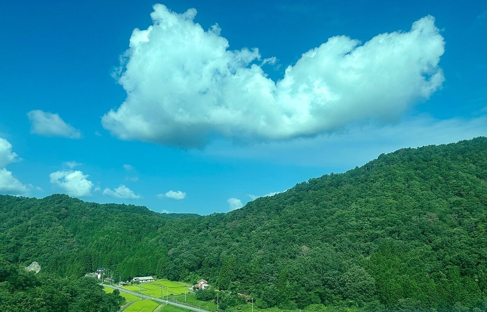
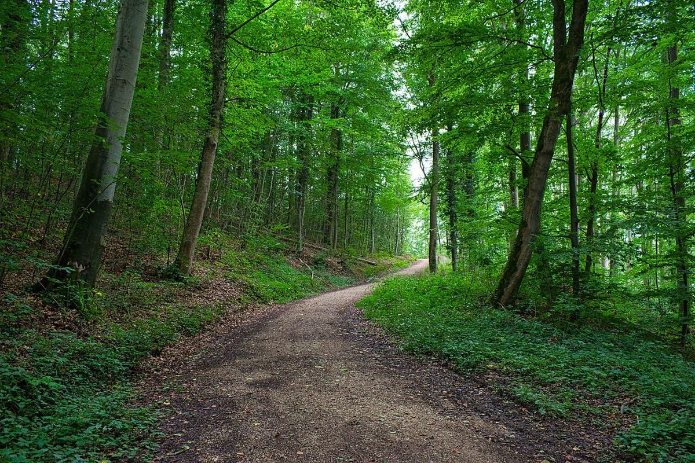

制作側の案
山あいで、ひと息つく場所
お店があるのは、広島県三次市廻神町です。
このページでは「山あいで、ひと息つく場所」という形でご紹介する案を考えました。
お店の詳しい内容は準備中です。実際の様子は、お店にご確認ください。
この紹介は制作側の案です。お店の考えとは異なる場合があります。
詳しい情報は順次ご案内します
ご案内
- 営業時間
- 準備中(お問い合わせください)
- 定休日
- 準備中(お問い合わせください)
- メニュー
- 準備中(お問い合わせください) メニューのページへ →
- 料金
- 準備中(お問い合わせください)
営業時間・定休日・メニュー・料金は、確認でき次第ご案内します。
掲載写真はフリー素材のイメージ写真で、店舗の実際の様子ではありません。他地域で撮影されたものや、撮影地が不明なものを含みます。